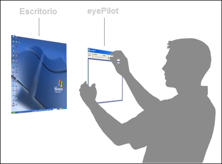

La cromatopsia o daltonismo dificulta muchísimo el uso de aplicaciones que usan el color para comunicar con el usuario. Hay pocos programas para aliviar este obstáculo. Uno de ellos es eyePilot, una ventana flotante con muchas funciones interesantes. Un clic sobre un color hará que este relampaguee en el resto de la pantalla, mientras que un filtro grisáceo ayuda a resaltar determinados colores que el usuario indique previamente.

La sobrecarga cognitiva es otro problema de accesibilidad / usabilidad para quienes padecen déficits de atención. TidyRead es una extensión de Firefox que simplifica el contenido de una página con sólo pulsar un atajo de teclado, mientras que los clones de Exposé, como WinExposé, ayudan a poner orden en el Escritorio. En general, se recomienda usar iconos grandes, fondos de pantalla neutros, pieles de gran tamaño y complementos para la interfaz.